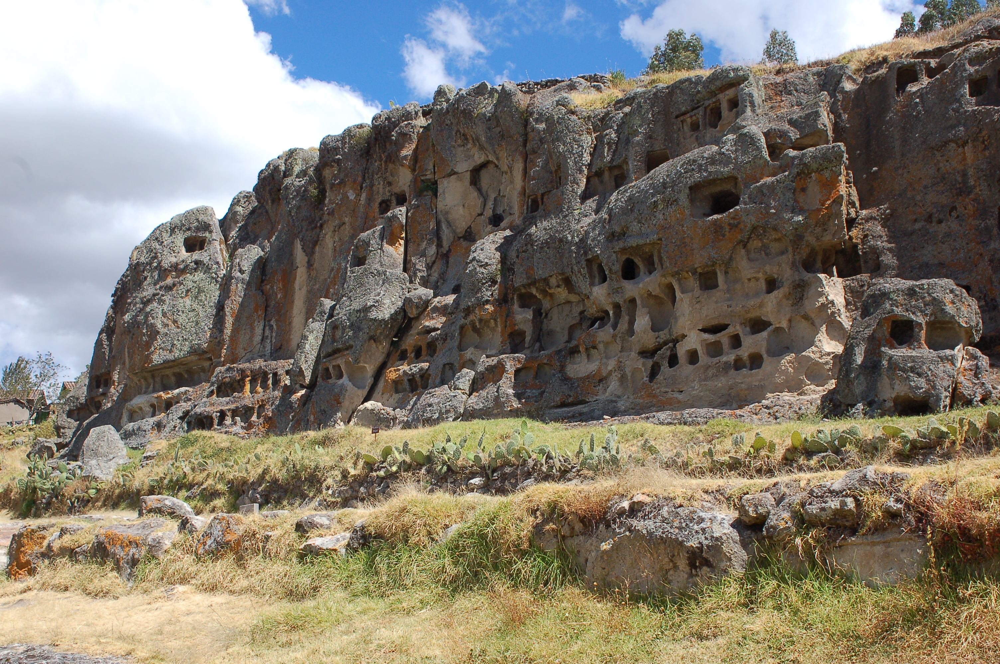
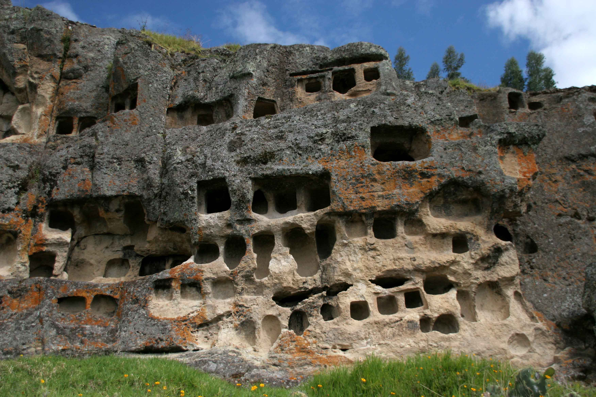
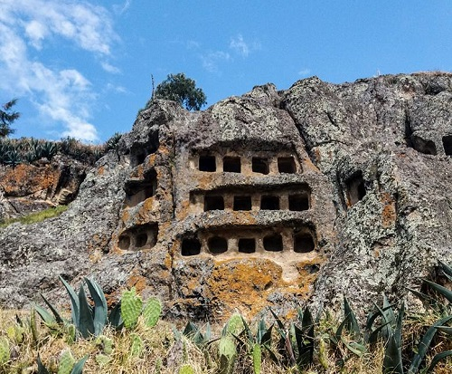
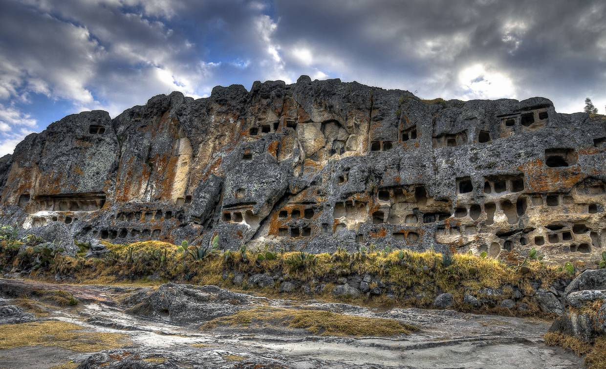
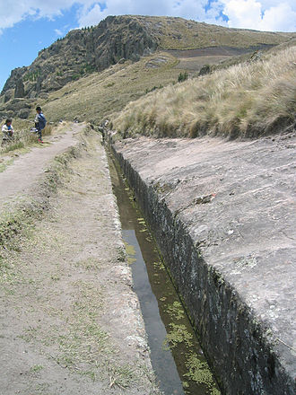
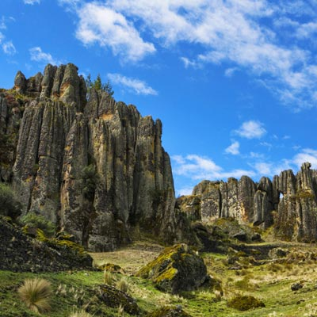
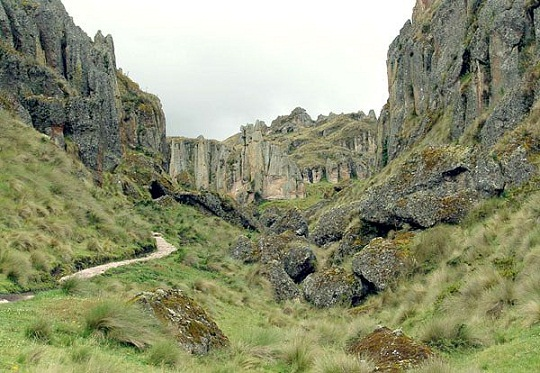
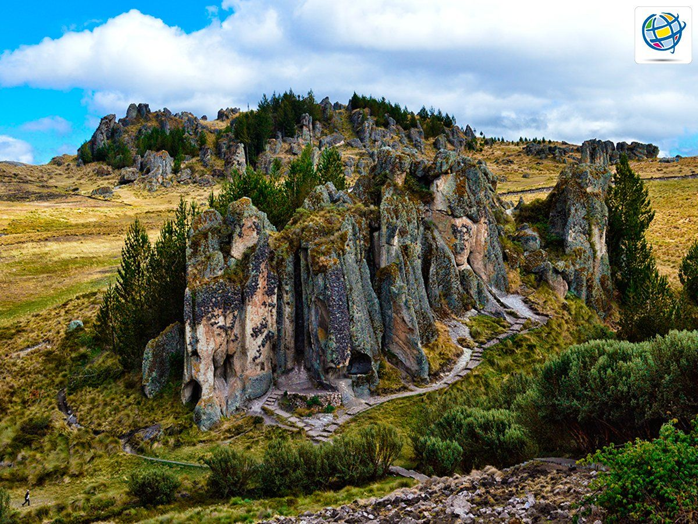

Las Ventanillas de Otuzco es un sitio arqueológico peruano situado en el distrito de Baños del Inca a 8 km al noroeste de la ciudad de Cajamarca. La criptas cumplía su función de recinto funerario. Está situado cerca del poblado Otuzco en
el distrito de Baños del Inca a 8 km al noroeste de la ciudad de Cajamarca. El sitio se localiza sobre roca volcánica. Tiene un área de 4 mil metros.
Ventanillas de Otuzco - fotos




Cumbemayo
Es un mágico bosque de piedras con enormes figuras líticas llamadas Frailones, por su parecido a una procesión de frailes. Descubierto en 1937, destacan el Acueducto (1300 a. C.), singular obra de ingeniería hidráulica; el denominado Santuario,
farallón con apariencia de una gigantesca cabeza humana; y las Cuevas, donde existen grabados o petroglifos. Se ubica a 20 km al suroeste de Cajamarca.
Cumbemayo - Fotos




Granja Porcón
Granja Porcón es una localidad peruana ubicada en la región Cajamarca, provincia de Cajamarca, distrito de Cajamarca. Se encuentra a una altitud de 3152 msnm. Tiene una población de 480 habitantes en 1993. Fue creada como cooperativa evangélica
en 1975 por los miembros de la “Atahualpa Jerusalén”. Se encuentra a 30 kilómetros de la ciudad de Cajamarca. Cuenta con un zoológico que protege a una gran cantidad de animales de la posible extinción. La localidad se encuentra rodeada
de un bosque de pinos pátula, radiate y seudostrobus, así como de las nativas el quinual y el aliso. En el lugar se puede encontrar productos lácteos y artesanía.